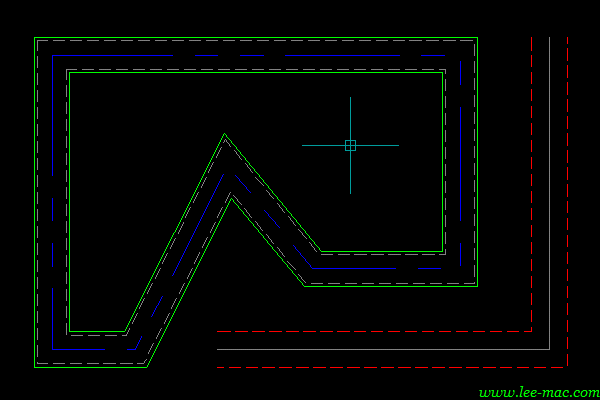

Multiline Justification
This page is delivered for consistency purposes only, as part of the LeeMac sample module of DynALisp, which shows how DynALisp turns existing AutoLISP programs into a module. The program and its description are the work of Lee Mac, who keeps all the credit for them. The original page, with the latest version, is on Lee Mac's website: https://lee-mac.com/mljust.html
| Function Syntax | LM-MultilineJustification – original syntax: mljust (see aliases) |
| Current Version | 1.0 |
| Compatible with AutoCAD for Mac? | No |
| Compatible with AutoCAD LT? | Yes |
| Original Page | lee-mac.com/mljust.html |
Program Description
This program enables the user to change the justification of a selection of multilines, without changing their position. Analogous to the Express Tools' TJUST command, however targeting mlines instead of text.
On issuing the command syntax MLJUST at the AutoCAD command-line, the user is first prompted to specify the new mline justification, with the choice of Top, Zero, or Bottom, per the options offered by the standard MLINE command.
The user may then select multiple mlines to be modified, with the program changing the justification of each selected multiline to that specified by the user, without changing the visual position of the multiline in the drawing.
The program will perform successfully under all UCS & View settings, and is compatible with multilines drawn in any UCS construction plane, using any multiline style, and with any multiline scale.
Demonstration

Bundled program notes
;;--------------------=={ Multiline Justification }==-------------------;;
;; ;;
;; This program enables the user to change the justification of a ;;
;; selection of multilines, without changing their position. ;;
;; ;;
;; This is analogous to the Express Tools' 'TJUST' command, however ;;
;; targeting mlines instead of text. ;;
;; ;;
;; On issuing the command syntax 'MLJUST' at the AutoCAD command-line, ;;
;; the user is first prompted to specify the new mline justification, ;;
;; with the choice of Top, Zero, or Bottom, per the options offered by ;;
;; the standard 'MLINE' command. ;;
;; ;;
;; The user may then select multiple mlines to be modified, with the ;;
;; program changing the justification of each selected multiline to ;;
;; that specified by the user, without changing the visual position ;;
;; of the multiline in the drawing. ;;
;; ;;
;; The program will perform successfully under all UCS & View ;;
;; settings, and is compatible with multilines drawn in any UCS ;;
;; construction plane, using any multiline style, and with any ;;
;; multiline scale. ;;
;;----------------------------------------------------------------------;;
;; Author: Lee Mac, Copyright © 2018 - www.lee-mac.com ;;
;;----------------------------------------------------------------------;;
;; Version 1.0 - 2018-10-17 ;;
;; ;;
;; - First release. ;;
;;----------------------------------------------------------------------;;
Command Names And Aliases
As in every DynALisp module, each program of this sample module has one main command, named LM-*, and the original command names of Lee Mac's page are kept as its aliases: they run the same command, and can be added, renamed or removed in Dyl-Suite (saved in Resources\Aliases.csv).
| Command | Aliases | Name |
|---|---|---|
| LM-MultilineJustification | MLJUST | Multiline Justification |